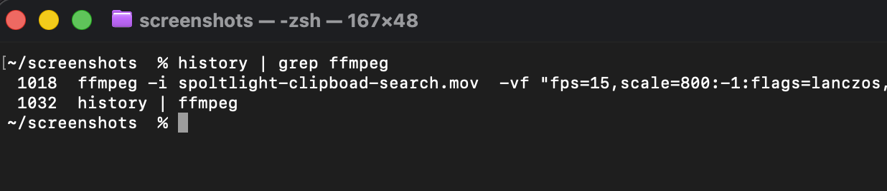

OCR · Vision Framework
How to Search Text Inside Screenshots on Mac with On-Device Apple Vision OCR
Discover how L2Cache automatically scans and indexes text in copied images and screenshots using native Apple Vision OCR, turning pixel blobs into searchable developer code.
Read Article →

AI · Claude Code · Codex
Tracking Claude Code & Codex Sessions: How AI Agent History & Token Analytics Supercharge macOS Development
Learn how tracking local Claude Code and Codex CLI agent sessions, token usage, and prompt cache hit ratios inside L2Cache helps engineers debug AI coding workflows.
Read Article →
Automation · Workflows
From Clipboard to API: 4 Developer Workflows You Can Automate on Mac
Turn copied JSON, stack traces, trace IDs, and test events into one-click workflows for local APIs, webhooks, developer CLIs, and services you choose.
Read Article →
Privacy · Apple Intelligence
Your Clipboard Manager Is Reading Your API Keys: Why Developer Tools Need On-Device Apple Intelligence
Discover why cloud clipboard tools risk leaking sensitive API keys and JWTs, and how L2Cache uses native Apple Intelligence to keep clipboard history 100% private.
Read Article →
Developer Tools · AI
5 Ways On-Device AI Supercharges macOS Developer Workflows
See how native Apple Intelligence and macOS Vision transform clipboard history for software engineers with instant code detection, terminal screenshot OCR, and smart transformations.
Read Article →
Swift · Architecture
Building Zero-Cloud Desktop AI: Swift Concurrency & Apple Intelligence on macOS
Discover how L2Cache achieves sub-100ms desktop AI on macOS using Swift Concurrency, Apple Silicon NPUs, and zero-cloud on-device compute.
Read Article →

SQLite · Performance
Preventing SQLite FTS5 Tokenization Hangs on Large Datasets
Learn how to prevent SQLite FTS5 from hanging on massive text blobs using a simple 8KB trigger hack for your full-text search indexes.
Read Article →

Swift · SQLite · Concurrency
Safe SQLite Concurrency in macOS using Swift Actors and GRDB
Learn how to build a buttery smooth macOS app by isolating heavy SQLite FTS5 operations off the main thread using Swift Actors and GRDB.
Read Article →
Regex · Search
Why Your Mac Clipboard Needs 'grep': A Built-in Regex Matcher
Bring the power of terminal grep to your macOS clipboard history. Use our built-in regex matcher to extract IP addresses, UUIDs, and API keys instantly.
Read Article →
SQL · AI Data Generation
Stop Writing Mock Data by Hand
Learn how to instantly generate realistic mock JSON data from SQL CREATE TABLE statements directly on your Mac clipboard using AI.
Read Article →
Security · JWT
Stop Leaking Secrets: How to Decode JWTs Locally on Mac
Don't paste sensitive tokens into online decoders. Discover a native Mac clipboard manager with offline JWT decoding and JSON formatting.
Read Article →